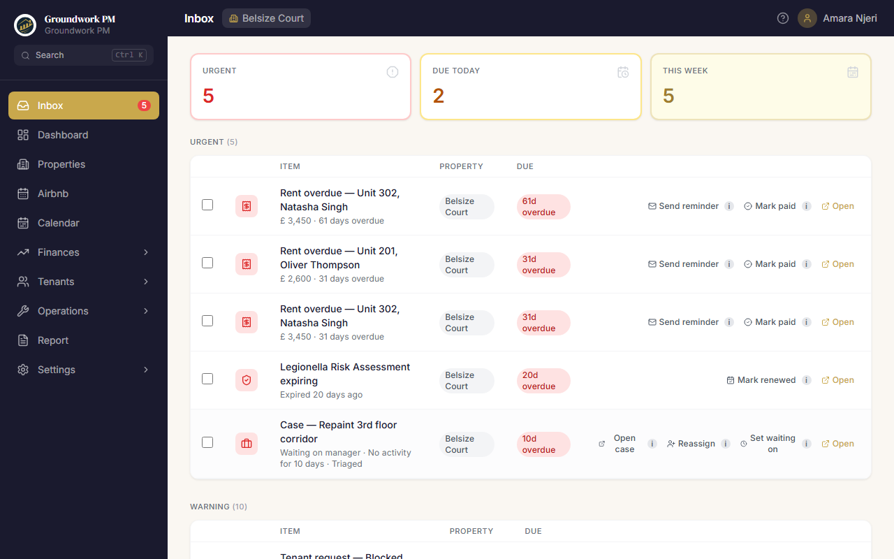
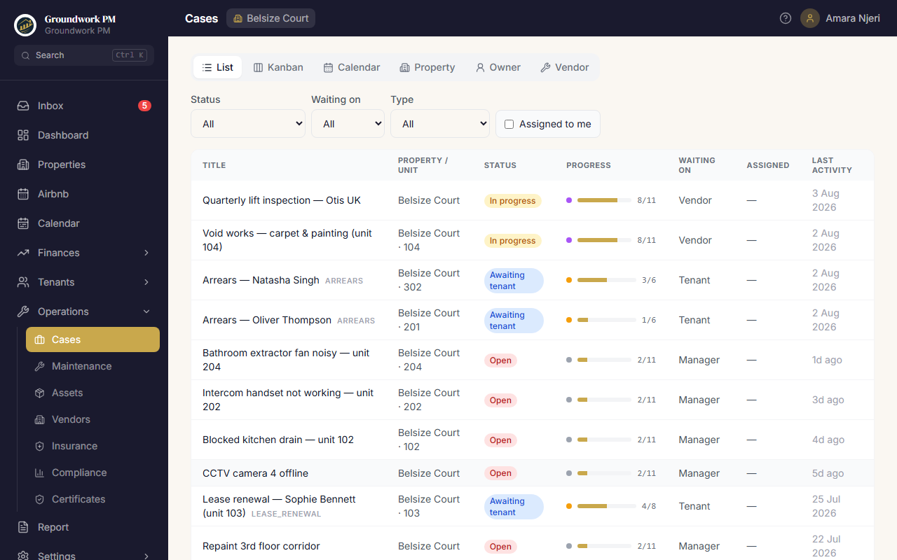
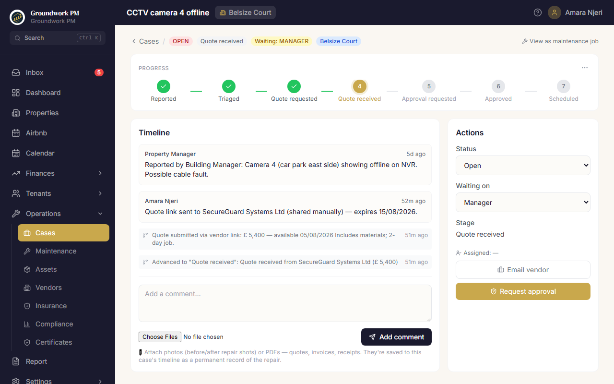
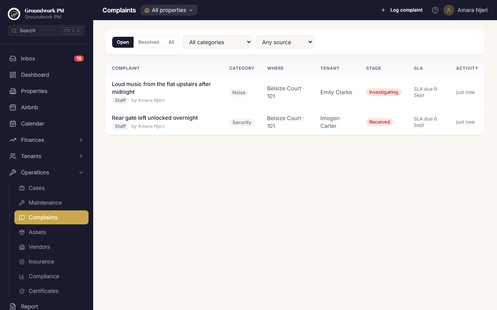
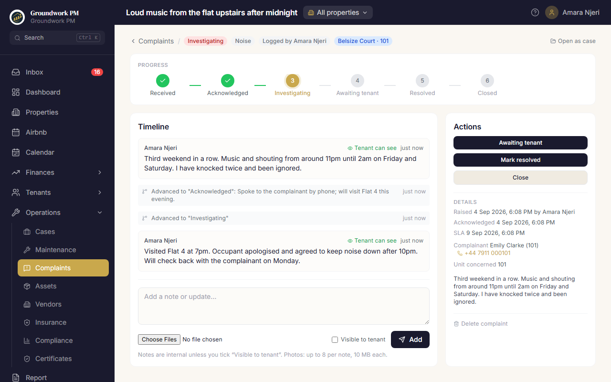
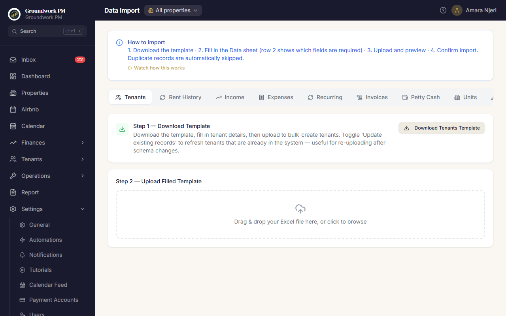
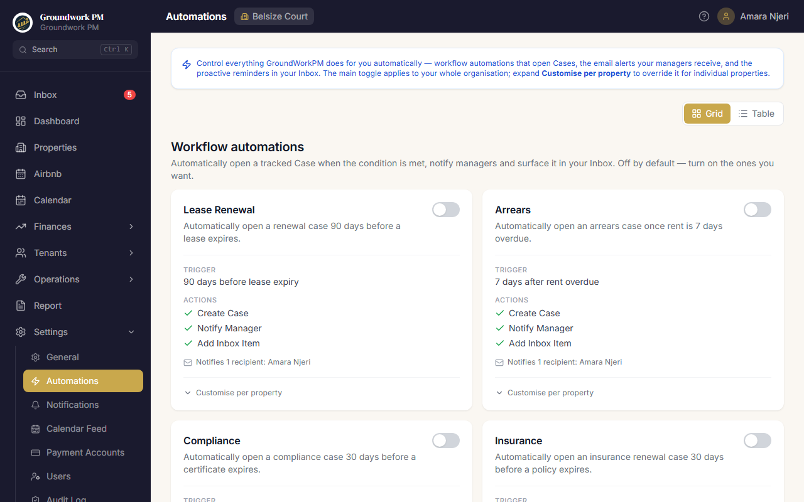

What is GroundWorkPM?
GroundWorkPM is a professional property management platform built for modern property managers. It consolidates income tracking, expense management, tenant administration, maintenance, and owner reporting into a single, opinionated tool.

The platform is built around five core workflows:
- A daily action queue — the Operational Inbox tells you what needs doing today; the Calendar shows when everything lands
- Financial tracking — log income and expenses per property and unit, with automatic P&L calculations, receipts, and payment tracking
- Tenant lifecycle — from onboarding and deposit verification through invoicing, renewal, arrears escalation, and checkout
- Maintenance & cases — every operational issue gets a timeline-driven case with stages, SLAs, and one-click owner approvals
- Owner reporting — professional PDF statements with itemised income, expenses, arrears aging, and net returns
Roles & Access Control
GroundWorkPM has five roles. Access is enforced at both the route and API level — users cannot reach pages outside their role. Every role is an allow-list: a page or action a role is not named on is closed to it.
| Role | Who it's for | What they can access |
|---|---|---|
| MANAGER / ADMIN | Property manager, agency administrator | Full access — inbox, dashboard, tenants, income, expenses, maintenance, cases, calendar, reports, settings, billing |
| ACCOUNTANT | Bookkeeper, accounts staff | Operational and financial pages — income, expenses, invoices, arrears, forecast, reports. Cannot delete financial records, run tenant lifecycle actions (vacate, checkout, deposit settlement), or change organisation settings. |
| CARETAKER | On-site staff — caretaker, estate supervisor, site hand | Only the day-to-day operational pages for the properties they are assigned: Maintenance, Complaints, Expenses and Vendors. Never sees rent, tenant finances, petty-cash balances, reports, cases, the inbox or settings. Details in The Caretaker role below. |
| OWNER | Property owner / landlord | The Report page only — owner statements with income breakdown, deductions, and net returns. Cannot see day-to-day financial details. |
| TENANT PORTAL | Tenant (no account needed) | Public, token-based portal — view invoices and balance, download PDFs and receipts, message the manager, submit payment proof and maintenance requests. |
The Caretaker role — on-site staff without the office view
A caretaker used to need a full Manager seat just to log a repair or a receipt, which exposed the rent roll, tenant balances and the petty-cash float. The CARETAKER role gives on-site staff exactly the four pages they work from, on the properties you assign them, and nothing else. Their home page is Maintenance; any other address redirects there.
| Page | A caretaker can | A caretaker cannot |
|---|---|---|
| Maintenance | Log jobs, move them through stages, set priority, assign a vendor, request quotes, and Log as Expense when done | Delete jobs, edit recurring schedules, or open the linked case (the Open case → link is hidden) |
| Complaints | Log, acknowledge, investigate and resolve tenant complaints, add notes and photos | Close or reopen a complaint, delete one, or see Staff conduct complaints at all — that category is invisible to the role end to end |
| Expenses | Record expenses with amounts, VAT and receipts; edit, delete and attach receipts on their own entries; tick Paid from petty cash | Touch anyone else's entries, use bulk actions or Delete all, view change history, record portfolio-wide costs, or see any petty-cash balance |
| Vendors | Add a contractor with full details (phone, email, tax ID, bank details) | See more than name, category and phone on existing vendors; edit, deactivate, delete, or open statements |
- Petty cash stays with the float holder — a caretaker can mark an expense as paid from petty cash, but the withdrawal is created awaiting confirmation and only moves the float once a manager approves it on the Petty Cash page. The caretaker sees a status badge on their row, never the balance. See Expenses & Petty Cash.
- Assigned properties only — a caretaker must be given at least one property when created or invited; there is no "all properties" default. Everything they see is filtered to those properties.
- Separate seats — caretakers do not use your team-member seats. Every plan includes its own caretaker allowance (see Billing & Plans).
- Quiet by design — caretakers receive no manager alert emails, have no Inbox, and their search palette covers only maintenance, complaints, expenses, vendors and property names.
ADMIN. The difference is organizationId: org-admins have an org ID and are scoped to their organisation; super-admins have no org ID and see all organisations via the platform admin panel.
Sign Up & Onboarding
New users are guided through a 3-step onboarding wizard immediately after signing up. No data entry is required to explore the platform — you can load a demo property in Step 3.


Onboarding: 3 Steps
Set up your first property
Enter the property name, type (Long-term rental or Short-let / Airbnb), currency, address, and city. If you signed up via Google OAuth, you'll also name your organisation here. Click Continue →.
Add your units
Add each unit inside the property — unit number (e.g. "A1", "101"), type (1 Bed, 2 Bed, Penthouse…), and monthly rent. Click Add another unit to keep going, or Skip for now to add units later from the dashboard.
Done — load sample data (optional)
Click Go to Dashboard → to start with your empty property, or pick a demo from the card picker and click Load sample property →. Demo properties come with 3 months of tenants, income, expenses, and arrears pre-loaded.
Setup Progress checklist
After onboarding, a per-property activation checklist appears on the dashboard showing a 0–100% setup score with row-by-row ✅ / ⚠ items (units, tenants, portal links, recurring expenses, insurance, vendors, agreement, branding, first entry). Each incomplete row has a one-click link to the right page. The Properties page shows the same score as a badge on each property card, so you always know what's left to configure.
The Dashboard
Your command centre. The dashboard aggregates live data from across the platform into KPI cards, actionable alert panels, an operations strip, a revenue trend chart, and property-specific tables.

Portfolio view vs single property
If your organisation manages multiple properties, the dashboard opens in the "All properties" portfolio view: combined KPIs, plus an All properties tab with long-term rent and short-let tables across the portfolio (each row shows its Property). Use the property dropdown in the header to scope everything to one property — your choice persists as you navigate.
KPI Cards (top row)
| Card | What it shows | Where the data comes from |
|---|---|---|
| Gross Income | All income (excl. deposits) for the selected month | Income entries for accessible properties |
| Net Profit | Gross income minus expenses and agent commissions | Computed live — never stored |
| Outstanding Invoices | Total unpaid invoice amount for the month | Unpaid invoices in accessible properties |
| Arrears Owed | Total overdue rent across all tenants | Sum of unpaid invoice balances past due date |
| Petty Cash Balance | Current petty cash balance | Recomputed from all petty cash entries |
Attention Required — actionable alerts
Four alert cards show the health of your portfolio, colour-coded red = critical amber = warning green = clear. These aren't just counters — each card lists the actual items with per-row actions, so you can resolve issues without leaving the dashboard:
- Lease Watch — up to five expiring / expired leases, each deep-linking to that tenant's Renewal tab with a Renew shortcut. Tenants with no lease end date ("Lease date TBC") get an inline date input — set the date right there and the row resolves in place.
- Unpaid Rent — invoices overdue or unsent this month
- Maintenance — open maintenance jobs and overdue recurring schedules
- Arrears — open arrears cases plus ledger debtors with multi-period balances, deep-linking to the Income page's arrears view
Operations strip
Below the alerts, a strip of tiles summarises the month's operations. Every tile lands on the page where you'd act on it: the Management Fee tile (with an "Owing − Paid" tooltip) opens Expenses where the fee payment is logged; the Renewals tile opens the Tenants page pre-filtered to the renewal pipeline; the Vacant Units tile opens Add Tenant with the vacant units ready to pick. Tiles that don't apply (e.g. management fee on a fee-free property) hide themselves.
Month Picker
The month picker controls which month's data is shown. Use the arrows to step a month at a time, or click the month label to open a jump-to-month popover — a year-paged 12-month grid with a "Current month" shortcut, so any month is a few clicks away. The month you pick is shared across pages: Dashboard, Income, Expenses, Airbnb, and Petty Cash all stay on the same working month as you navigate.
Setup Progress widget
When a property is selected, the activation checklist appears above the KPI strip (see Getting Started). At 100% you can dismiss it — it reappears automatically if the score drops. Hidden for the OWNER role.
Operational Inbox
A single prioritised queue of everything that needs your attention today. Managers and accountants land here first. It's the daily landing surface and the only screen that promises "if it's not here, you don't need to act on it."

What appears in the inbox
Each row is a real event the system detected — not a configurable filter or a saved view. The inbox aggregates from nine sources:
- Overdue invoices — any invoice
SENTorOVERDUEwith a due date in the past - Lease expiries — tenants with a lease ending in ≤30 days (urgent inside 7 days)
- Urgent maintenance — jobs marked
URGENTstillOPEN - Tenant portal requests — maintenance jobs submitted by tenants, not yet acknowledged
- Compliance certificates expiring in ≤30 days
- Insurance policies ending in ≤30 days
- Arrears cases not resolved and untouched for >7 days
- Approvals pending — magic-link approvals open more than 24 hours (escalates to URGENT after 3 days)
- Smart Reminders — proactive suggestions written by the daily cron (see below)
Severity, action, dismiss, snooze
Every row carries one of three severity dots: URGENT WARNING INFO. Rows are sorted by severity then by days-overdue. Inline actions resolve the underlying issue without leaving the inbox — "Mark paid" on an overdue invoice, "Assign vendor" on an urgent job, "Send renewal offer" on a lease expiry, and so on. Hint-sourced rows show a ✨ Suggested badge plus a small ⏰ snooze (1h / 1d / 1w, per-user) and × dismiss control.
Send reminders — real emails, in bulk
Select overdue-invoice rows and click Send reminders: each tenant receives a rent-payment reminder email quoting their invoice number, outstanding amount, and days overdue. Every send is logged to the tenant's communication trail, and tenants with no email address on file are reported back to you as failures — nothing is silently skipped.
Smart Reminders (proactive cron)
Every morning at 07:00 UTC the system checks for things you couldn't know about yet:
- Vacant unit > 30 days — suggests "Mark as listed"
- Deposit not settled > 14 days after move-out — opens the settlement flow
- Recurring expense due within 3 days — one-click to materialise this month's entry
- Low petty cash — balance < 20% of last 90-day average outflow
- Negative cashflow forecast — next 3 months shows a month going negative
- SLA breach — a case stage has stalled past its budget (see Cases below)
Hints clear automatically when the underlying state changes. Dismissed hints expire after 30 days unless they recur.
Mobile
The inbox is the first item in the mobile bottom navigation. The same rows render as stacked cards with a checkbox, severity dot, action menu, and the inline snooze / dismiss controls.
Cases & Approvals
Every operational issue gets a workspace — a timeline of comments, emails, attachments, status changes, and approvals — anchored to a visible workflow with per-stage SLA budgets. Replaces the WhatsApp + email + screenshot loop.

When a case is created
Cases are created automatically the moment a backing record exists. Three case types are fully live today: MAINTENANCE — every maintenance job auto-creates a case with the job description as its first comment; ARREARS — the arrears escalation ladder runs entirely on cases (see Income, Invoices & Arrears); and COMPLAINT — every tenant complaint carries its own case with a six-stage workflow (see Tenant Complaints). The workflow types LEASE_RENEWAL, COMPLIANCE, and GENERAL are defined and can be opened by the corresponding Automations or manually.
The stage tracker (visible workflow)
Each case carries an ordered set of stages. A MAINTENANCE case moves through: Reported → Triaged → Quote requested → Quote received → Approval requested → Approved → Scheduled → In progress → Completed → Invoiced → Closed. The tracker at the top of each case page shows your current position. Completed stages render green; the current stage is gold; future stages are gray. Click a future stage to advance with an optional note; the overflow menu offers regress-with-reason for fixing slips.

Bypassed vs completed
If you set Status to RESOLVED / CLOSED before walking the workflow, the stepper shows an amber "Bypassed at [stage]" banner — the timeline never lies. Stages past the abandon point render faded with a dashed border. Reaching the natural completion stage and then closing shows a clean green "Completed" instead. (Arrears cases are the exception: settling early is the best outcome there, so it always reads as completed, never bypassed.)
Per-stage SLAs
Each stage has its own budget in hours. Defaults come from the workflow definition; for MAINTENANCE the first two stages (Triaged, Quote requested) override from the property's Management Agreement (Emergency response hours when the job is emergency, otherwise Standard). The clock pauses automatically when the case is waiting on an external party — Owner, Tenant, or Vendor — so you're not penalised for someone else's delay. When a stage stalls past its budget, a SLA breach hint surfaces in your inbox (WARNING, escalating to URGENT at 2× the budget).
Communication unified in the timeline
Three communication systems all dual-write into the case timeline:
- System-sent emails (cron notifications, reminders) — logged AND posted as an EMAIL_SENT event on the linked case
- Tenant comm log entries (the per-tenant log) — post an EMAIL_SENT event AND a "View case →" backlink appears on the tenant's Comms tab
- Vendor emails (drafted from the case detail page) — logged + posted as an EMAIL_SENT event
Open any case and you see the full operational history in one chronological feed — no inbox-hopping.
Magic-link approvals
Click Request approval on the case action panel. Fill in the approver's email, the question, an optional amount + currency, and an expiry window (default 72 hours, max 7 days). The system:
- Generates a single-use token and emails the approver a magic link
- Sets the case's waitingOn to OWNER (the SLA clock pauses automatically)
- Logs an APPROVAL_REQUESTED event on the timeline
The approver clicks the link — no login required, no portal training. They type their name (captured for the audit trail), then click Approve or Reject. The case auto-advances; a confirmation email goes back to the approver with a "This wasn't me — flag for review" link that triggers a DISPUTE state and notifies you.
Cases list
/cases shows every case across your accessible properties with filters for status, waiting-on, type (including Complaint), and "assigned to me." Each row has a thin progress bar (e.g. 4 / 11) plus a coloured dot indicating who the case is waiting on. Click any row to open the case detail.
Maintenance ↔ Cases co-existence
The /maintenance page still exists — it's the domain-specific view (job board with status columns). /cases is the cross-cutting workflow view (timeline + comments + approvals). Each Maintenance job card has an Open case → link; each Case detail page has a View as maintenance job → link. Complaints work the same way: the case behind a complaint shows a View as complaint link back to the complaint page, where the complaint-specific actions live. Use whichever fits the moment.
Calendar
When everything lands. The calendar plots every dated obligation across your portfolio on one grid — leases, rent due dates, maintenance visits, insurance renewals, compliance expiries, and more. The Inbox is "what do I do now"; the Calendar is "when does it land."

What appears on the calendar
Thirteen event types, drawn live from your data — nothing to enter manually:
- Leases — lease starts and lease expiries
- Money — rent due dates (from invoices), recurring expenses, rent remittance day (verified against recorded owner payouts — a remitted period drops off; an unpaid past one shows overdue), and management-fee invoice day (from the property's agreement)
- Maintenance — scheduled contractor visits, recurring maintenance schedules coming due, and asset warranties ending
- Renewals & compliance — insurance renewals and compliance certificate expiries
- Workflow deadlines — approval expiry deadlines and case SLA deadlines
Events are grouped into four filter buckets so you can scan just money, just leases, just maintenance, or just deadlines. An Assigned to me filter shows only events with a genuine owner (case SLAs, booked visits, your approval requests).
Views: Month, Week, Agenda
Switch between a month grid (with a side list for the selected day), a 7-day week view, and a pure agenda list — your choice is remembered. Same-day clusters roll up, severity shows as coloured dots in the grid, and every event deep-links to the record it came from (the tenant, the invoice, the case). A Today button snaps you back. On mobile the calendar renders as an agenda automatically.
Overdue hand-off, snooze, and empty states
- Overdue — past-dated events that are still open obligations are counted and previewed at the top, with a link to the Inbox, which owns the per-item actions. The calendar deliberately doesn't duplicate the inbox queue.
- Snooze — any event can be snoozed ("not now") per-user. Snoozed events hide from your calendar until you restore them; a counter shows how many are hidden.
- Self-explaining empty state — if a month has no events, the calendar tells you which sources aren't configured yet (no tenants, no agreement, no maintenance schedules…) with links to set each up — so "nothing is due" and "you never set this up" stop looking identical.
Subscribe from your own calendar app
From Settings → Calendar you can create a personal calendar feed — a private URL you paste into Google Calendar, Outlook, or Apple Calendar ("subscribe by URL" / "add from internet"). Your GroundWorkPM events then appear alongside your personal calendar and refresh automatically.
- Each feed can cover all your properties or a chosen subset
- Feed events use privacy-minimal titles (no tenant names) since the URL lives outside the app
- Feeds never expire silently — revoke or rotate them explicitly from the same page
- If your property access changes, the feed narrows automatically on the next refresh
Need a one-off file instead? The Export button downloads a snapshot .ics you can import anywhere.
Properties & Units
Manage your property portfolio — add properties, configure currencies, add units, and view property-level settings.

Property Types
| Type | Used for | Revenue tracking |
|---|---|---|
| LONGTERM | Residential long-term rentals | Monthly rent invoices per tenant |
| AIRBNB | Short-let / holiday / serviced apartments | Per-booking income with nightly rate and platform source |
Adding a Property
Click Add Property
Opens a form for name, type, currency, address, and city.
Set currency
Choose the currency for all income and expenses on this property. Supported: KES, USD, GBP, EUR, AED, ZAR, TZS, UGX, INR, CHF, and more.
Add units
From the property card or detail page, add units with number, type, and monthly rent. Unit types: Bedsitter, 1–4 Bed, Penthouse, Commercial, Other.
Tenant Management
The full tenant lifecycle — from adding a new tenant, verifying their deposit, and issuing their first invoice, to lease renewal, arrears, move-out checkout, and deposit settlement.


Tenant Detail Tabs
| Tab | What you can do |
|---|---|
| Ledger | Month-by-month rent payment ledger showing expected vs received amounts and a running balance. Receipts are allocated oldest-first (statement-style), so a tenant who pays a quarter or year up-front is not shown as unpaid for the covered months. |
| Invoices | View, generate, send by email, and mark invoices paid. Download individual invoice PDFs. |
| Documents | Upload and manage lease agreements, IDs, receipts, and other documents in the secure vault |
| Rent History | Log rent escalations and adjustments with effective dates. Warns when the timeline is out of sync with the tenant's current rent, with a one-click fix. |
| Renewal | Progress the lease renewal pipeline (Notice Sent → Terms Agreed → Renewed), set proposed rent and end date |
| Deposit | See the deposit position (contractual vs actually received), link deposit receipts, and record settlement with itemised deductions |
| Comms | Log outbound emails sent to the tenant, with templates for rent reminders, receipts, and renewal offers |
| Portal Msgs | Read and reply to two-way message threads the tenant opens from their portal. A thread that is really a grievance has a Log as complaint button — it opens a complaint pre-filled from the thread and links the two, so the chat history and the formal record stay together. |
| Complaints | Every complaint this tenant has raised or been the subject of, with stage, category and SLA status, plus a Log complaint button pre-filled with the tenant and unit. See Tenant Complaints. |
Adding a Tenant
Click Add Tenant
Opens a two-step modal. Step 1: name, contact details, unit assignment, lease dates, monthly rent, service charge, parking fee, deposit, payment frequency, escalation, and postal address (see below). Step 2: optional document upload (ID, lease agreement).
Letting fee prompt
After saving, the system automatically prompts you to record a letting fee (50% of first month's rent by default). Confirm to create the expense entry.
Generate first invoice
Navigate to the Invoices tab on the tenant detail page and click Generate Invoice for the first rental month.
Contacts, Postal Address & Lease Terms
The tenant form captures more than a single email and phone. All of these can be set when adding a tenant, or later via the Edit button in the tenant detail header:
- Additional contacts — click Add contact to record any number of extra people (spouse, accounts office, guarantor) with a label, email, and phone.
- P.O. Box / Postal Address — the tenant's postal address for formal letters. It also prints in the "Bill To" block of invoice PDFs.
- Payment Frequency — Monthly, Quarterly, Bi-annual, or Annual. Period payers pay in advance for the whole period; this drives the collection view, invoices, ledger, and arrears (see Income & Invoices).
- Escalation Rate & interval — a percentage plus how often it applies. Used to project future rent in the forecast.
- Parking Fee — a monthly parking line billed alongside rent.
Deposits — contractual vs actually received
GroundWorkPM distinguishes the deposit a tenant should have paid (the contractual amount on their lease) from what you can prove was received (DEPOSIT income receipts linked to the tenant):
- The Tenants page shows a Deposits held card summing receipt-verified deposits, with a count of tenants whose deposit is still unverified
- Unverified tenants carry an amber Deposit badge in the list
- Click the card to open the verification drawer — confirm the amount actually received (editable for partial deposits) and the received date for each tenant, and the linked deposit receipt is created on the spot. Each verification is a deliberate per-tenant act; there's no bulk "confirm all".
- At settlement or checkout, the refund is computed from verified receipts when a trail exists — falling back to the contractual amount with an "unverified" warning when none is recorded
Lease Renewal Pipeline
Track renewal progress through four stages:
When you set the stage to RENEWED, the system automatically copies the proposed rent to the tenant's monthly rent and updates the lease end date. The Tenants page has a Renewals filter showing everyone currently in the pipeline — the dashboard's Renewals tile lands there too.
Move-in condition report
Before a tenant moves in, open the unit and start a Condition Report — a mobile-optimised, room-by-room stepper (rate each feature Perfect / Good / Fair / Poor, add notes, and capture photos with your phone camera as you walk the unit). Finalising generates a professional PDF with a photo appendix and files it into the tenant's document vault automatically. The same structure is used for mid-term and move-out reports, so conditions can be compared like-for-like later.
Checkout / move-out
When a tenancy ends, click Checkout in the tenant detail header. The checkout page mirrors a full check-out form — condition findings, outstanding rent balance (computed from unpaid invoices), itemised deposit deductions, keys returned, utility transfers, and refund instructions — with a sticky live settlement box showing the running refund as you type. Finalising:
- Marks the tenant vacated and the unit VACANT in one atomic step
- Records the deposit settlement (from verified receipts where available)
- Optionally creates a reinstatement expense when damage costs are kept by the landlord
- Generates a signature-ready PDF of the whole checkout
- E-sign, no printing — click Request tenant sign-off to send the tenant a secure link (email, WhatsApp, or SMS). They review the settlement and acknowledge by typing their name; the typed signature and timestamp then appear on the checkout PDF, and you're notified.
Generating a Portal Link
From the tenant detail page header, click Generate Portal Link. Share the unique URL with the tenant — they can view invoices and balance, download PDFs and receipts, message you, submit payment proof, and raise maintenance requests without creating an account. See Tenant Portal.
Income, Invoices & Arrears
Track all rental income per property per month. The invoice system bridges the gap between what's expected and what's been received — and when payment doesn't come, the arrears workflow escalates it properly.

Recording payments — including partial payments
The monthly Collection view lists every tenant with their expected amount and status. Record a single payment from the row, or click Record all pending to preselect every unpaid tenant into an editable bulk-record bar — you can adjust each tenant's amount before posting, so partial payments are first-class. If any rows fail, they're named in the toast and stay selected for one-click retry.
- A payment automatically finds and settles the tenant's open invoice — even when a quarterly or annual payer pays after their billing month, the payment matches the invoice covering that period
- Partial payments accumulate on the invoice; it only flips to PAID once effectively fully paid — short payments leave it SENT/OVERDUE with the balance visible
- Recording a payment prefills the correct period amount for the tenant's payment frequency, not blindly one month's rent
Payment Frequency & the Collection view
Each tenant's Payment Frequency (Monthly, Quarterly, Bi-annual, Annual) drives every expected-rent surface. Quarterly, bi-annual, and annual tenants pay for the whole period in advance, so:
- On a tenant's billing month (anchored to their lease start), the Expected column shows the full period amount — labelled e.g. "Quarter in advance"
- In the covered months in between, the tenant shows Not due rather than a red "Pending", and is excluded from the progress bar and bulk selection
Invoice Workflow

Generating & emailing invoices
Generate invoices per tenant (Invoices tab) or in bulk for a whole property. Bulk generation is schedule-aware — a quarterly tenant gets one invoice covering the three-month period on their billing month, and nothing in the covered months. Delivery happens right from the app:
- Send on any invoice emails the PDF straight to the tenant — no downloading and re-attaching
- Bulk actions — tick multiple invoices and use Email to tenants or Mark paid; per-invoice failures are reported without aborting the batch
- Automatic generation — turn on the Auto invoice generation automation and each month's rent invoices are drafted and emailed for you, with a per-property summary email to managers (see Automations)
- Automatic chasing — the opt-in Tenant rent reminders automation emails each tenant a heads-up 3 days before the due date, a reminder on the due date, and a follow-up once 7 days overdue — every send logged to the tenant's comms trail
- The page loads 200 invoices at a time with a Load more footer for long histories
Reconciling a bank / M-Pesa statement
When payments arrive in bulk, you don't have to match them row by row. Click Reconcile in the Invoices header, then paste your statement (or upload a CSV export) — M-Pesa confirmation texts, bank CSV exports, and Excel pastes are all understood:
- Each credit line is matched against your open invoices by amount and payer name; unambiguous matches are pre-selected, everything else offers a ranked shortlist
- You confirm before anything is recorded — each confirmed line creates the income entry, settles the invoice (partial payments leave the balance visible), and triggers the same follow-through as marking paid manually
- Ambiguous cases — like a tenant with two open invoices for the same amount — are deliberately left for you to decide
What's on the invoice PDF
- Your numbering series — invoice numbers follow a configurable format (default
INV-{YYYYMM}-{SEQ}) with tokens for year, month, and sequence. Each payment account can run its own independent series (e.g.SHAH-2026-0042), and you can set the next number to continue seamlessly from a previous system. Configured in Settings → Payment Accounts. - Frequency-aware description — reads "Rent — July 2026 (payable quarterly in advance)" for non-monthly tenants, with a Payment Terms line
- Lease start & end dates and the tenant's P.O. Box in the Bill To block
- How to Pay — bank / M-Pesa details resolved from the property's payment account (or a per-unit override — see Payment Accounts)
- Outstanding balance — an amber note showing unpaid amounts from the tenant's other invoices, plus the combined total
- Invoicing identity — when a unit is paid to a different company's account, that company's name, logo, address, contact details, PIN No. and VAT No. replace the header
Changing the payment details shown on an invoice
The "How to Pay" block (bank account, M-Pesa Paybill/Till, payment instructions) isn't typed on each invoice — it comes from a reusable Payment Account. To change what tenants see:
Create or edit the account
Go to Settings → Payment Accounts. Each account holds the bank name, account name & number, branch, M-Pesa Paybill / Till, and free-text payment instructions. Editing an account updates every invoice that resolves to it from then on.
Point the property at it
Open the property's Management Agreement page and pick the account as the property default — it now applies to every unit in that property.
Override a single unit (optional)
If one unit is paid into a different account (even a different landlord company), open that unit's Edit form and choose its own payment account. Leave it blank to inherit the property default.
Tax on invoices & rent receipts
Tenant rent invoices are issued without a VAT line — residential rent is exempt in most jurisdictions, so the invoice total is simply rent + service charge + other charges (+ any late fee). Where tax does come in:
- Rent receipts — if a tax rule in Settings → Tax applies to rent, the tax is captured on the income entry when the payment is recorded, using the rate in force on the payment date. This happens consistently however the payment lands — manual income entry, marking an invoice paid (singly or in bulk), verifying a tenant's proof of payment, or bank-statement reconciliation.
- Tax-exempt tenants — flag a tenant as tax exempt on their profile and no tax is ever snapshotted on their receipts.
- Owner invoices — management-fee and letting-fee invoices to the landlord automatically add a VAT line when a rule covers management/letting-fee income, since those are your taxable services. The rate used is the one in force for the billed period.
- Recorded tax is stored on each record at entry time — later rate changes never alter historical invoices or receipts.
Late fees
If a property's management agreement sets a late-payment interest rate, you can apply a late fee to any overdue invoice from the row's status menu (Apply late fee…). The fee is computed from the outstanding amount, the agreement rate, and days overdue; it folds into the invoice total and prints as a "Late Payment Fee" line on the PDF. Remove it the same way if you waive it.
Fixing an accidental "mark paid"
Marking an invoice paid creates the matching income entry, so a PAID invoice's status menu deliberately offers only one path back: Revert to unpaid…. This properly reverses the payment — status returns to SENT/OVERDUE and the linked income entry is removed in the same step, so your books never double-count. (Deleting financial records requires the appropriate permission; accountants can't.)
Tenant Statement of Account
The Statement button on a tenant's page (long-term properties only) produces a formal statement of account as a PDF — download it or email it to the tenant directly. Pick the period: current lease year (anchored on the lease start, so numbering survives renewals), full tenancy, a calendar year, or a custom range. The statement shows the balance brought forward, every invoice and payment in the window with a running balance, late fees broken out, the deposit position, and a plain-English verdict: in arrears, in credit, or settled.
- Payments made before the lease started (paid early to secure the property) appear as a brought-forward credit — the money is never hidden
- Proof-of-payment submissions awaiting your confirmation show as marked memo lines that don't reduce the balance until you verify them
- Payments-only statements — if a tenancy has no invoices at all (rent history from before you used invoicing), the statement lists payments without claiming a balance either way. To get real balances for past periods, import historic invoices (see Data Import below)
- Unallocated payments — a payment not tied to any invoice still counts fully; where the tenancy has invoices it's captioned "unallocated" and you can attach it via the Link… action on the Income page
If a period genuinely has no records, the statement refuses to generate rather than sending a tenant a blank document that reads as "no rent was ever recorded" — the screen tells you why and what to fix.
Arrears — the escalation workflow

The Arrears page shows every tenant with an overdue balance, bucketed by age (0–30 / 31–60 / 61–90 / 90+ days). Each debtor is managed through an arrears case — the same case machinery as maintenance, with a defined escalation ladder:
- One-click escalation — each step advances the case with the SLA clock, timeline, and audit trail underneath; the tenant can settle at any stage (settling after the first reminder is the best outcome, and reads that way)
- Stage-appropriate letters — each stage offers the right document (payment reminder, formal notice, demand letter, notice to remedy breach) so you never send demand-letter teeth too early or a toothless demand too late
- Skipping stages needs a note — jumping more than one stage requires a written reason, recorded on the case. If the escalation is ever read back in a dispute, the record shows proper notice was given.
- Stale cases surface in the Inbox — an arrears case untouched for 7 days comes back to you automatically
Income Types
| Type | Description | Notes |
|---|---|---|
| LONGTERM_RENT | Rent payment from long-term tenant | Auto-settles the tenant's open invoice for the covered period |
| AIRBNB | Short-let booking revenue | Includes nightly rate, check-in/out dates, platform source |
| SERVICE_CHARGE | Service charge or maintenance levy | Included in gross income |
| UTILITY_RECOVERY | Recovered utility costs from tenant | Included in gross income |
| DEPOSIT | Security deposit received | Excluded from gross income — feeds the deposit position instead |
| OTHER | Any other income | Included in gross income |
Exporting income
The Export button opens a range dialog with presets — selected month, previous month, year to date, last 12 months, all history — or a custom from–to month range. The export refetches the full chosen range, so it isn't limited to the month on screen.
Expenses & Petty Cash
Log every property expense with category, scope, vendor, tax, receipts, and payment tracking. Expenses are separated between operating costs (P&L) and capital/sunk costs.

Expense Scope
| Scope | Assigned to | Use case |
|---|---|---|
| UNIT | Specific unit | Repair inside a single unit, appliance replacement |
| PROPERTY | Whole property | Building insurance, common-area maintenance, landscaping |
| PORTFOLIO | No specific property | Software subscriptions, management office costs |
Adding an expense — the quick path
Click Add Expense and a slide-over opens on the right, so the list stays visible. The everyday case takes four fields: the form already has today's date filled in, so pick the scope and the unit or property, pick a category, type the amount, and save. Everything else is optional.
Where does the cost belong?
Choose the scope first. Unit shows a checklist of units (tick several to split the cost equally; once one is ticked, units in other properties grey out because one expense belongs to one property). Whole Property shows a property dropdown. Whole Portfolio needs nothing. The form will not save a Unit expense with no unit ticked, or a Property expense with no property picked — it tells you exactly what is missing.
Category and amount
The category starts on Select category… rather than silently defaulting to the first option, and the amount must be greater than zero. Type the net figure (excluding VAT, after any discount). For a bill with several parts, click Itemise under the amount — the line-item editor appears right there and the total is computed from the lines.
Payment (optional)
Leave the payment block alone for an unpaid bill; it will show as UNPAID with a balance. Click Paid in full to settle it in one click (amount paid = amount, payment date = expense date), or type a partial amount. Tick VAT applicable if the supplier charged VAT: the VAT figure fills in from your tax rule (editable), or you type it from the invoice when no rule exists.
Save
The row appears at the top of the month you are viewing. If you dated it in a different month, a toast says which month it went to with a View that month link, so nothing "disappears". Expense dates cannot be in the future.
- Nothing is lost by accident — closing the form (the ×, Cancel, or the Escape key) with unsaved changes asks first. Clicking on the backdrop never closes it.
- Errors say what went wrong — a locked subscription, a permission denial, or a validation problem each show their real message instead of a generic "Failed to save".
- Duplicate warning — the same category and amount within three days of an existing entry (including across a month boundary) shows a soft warning; you can still save.
- Standing costs — a "set it up as a recurring expense" link at the bottom of the form carries what you typed over to the Recurring Expenses page, so monthly bills only need entering once.
Line items — itemised bills, Qty × Rate, and discounts
A quick expense is just a date, category, and amount. But for an itemised bill (say a contractor invoice with labour and materials), click Itemise this bill under the Amount field to break the expense into line items; the editor opens right below the amount, and Add line adds more rows. Each line carries its own type (Labour / Material / Fixed-price quote / Transaction charge), amount, Taxable tick-box, and amount paid — and the expense total is computed from the lines automatically. Remove every line to go back to a single amount.
- Qty × Rate (optional) — fill in a quantity and a per-unit rate (fractional quantities like
2.5kg are fine) and the line's amount is calculated for you and shown read-only. Leave them blank to type the amount directly, exactly as before. The breakdown is saved with the line, so it's still there when you edit later. - Discount received — if a vendor gave you money off, record the discount value here (on a line, or in the payment block for a single-amount expense). This is for your vendor-savings reporting only: the Amount field is always what you were actually charged after the discount, and the discount is never added to or subtracted from any total, balance, or report figure. Think of it as "we would have paid X more at list price".
- Per-line payments — type the amount paid on each line (or click Pay in full); the line's Unpaid / Partial / Paid badge is derived from that figure, so it can never disagree with the expense's overall status, which is derived from the lines the same way. A line that was paid in full stays paid in full if you later correct its amount. Payment date and reference fields appear once something has been paid.
- Payment method and due date stay on the expense — an itemised bill still has one payment method and one due date; only amounts, dates, references and VAT move to the lines.
Receipts & documents on every expense
Attach the paper trail directly to each expense — receipts, invoices, quotes, contracts, photos:
- Upload any way you like — drag-and-drop multiple files, browse, or use your phone camera to snap the receipt on the spot
- Per-file caption and category, with upload progress bars and inline errors with retry
- Large photos compress automatically before upload, so field snaps don't eat your data
- Duplicate protection — re-attaching the identical file (even renamed) is caught and blocked
- Gallery + lightbox — thumbnails on the expense row expand into a full-screen viewer with arrow-key navigation; PDFs preview inline
- Attach in the Add Expense form too — queued files upload as soon as the expense is saved
- A Missing receipt / Has receipt filter helps you chase undocumented spending before month-end
Payment Status & Outstanding Balance
Expenses aren't just "logged" — you can track exactly how much has been paid and what's still owed. The add/edit form has a payment block capturing Amount Paid, Due Date, VAT Amount (kept separate — the Amount field is always net of VAT), Discount Received (informational — see the line-items section above), Payment Method, Payment Reference, Payment Date, and notes.
From these, the system derives a status for each expense — never stored, always recomputed:
PAID PARTIAL UNPAID
- Paid in full — one click in the payment block settles the expense: amount paid becomes the amount and the payment date defaults to the expense date. You can still overtype either.
- VAT applicable — tick it and the VAT amount fills in from your rule in Settings → Tax (or type it yourself). Untick it and no VAT is recorded.
- The form refuses an amount paid larger than the amount, and a payment date with nothing paid, with a message saying which to fix.
- The page surfaces a Balance + Due column, and an overdue banner lists any expense past its due date with a balance owing
- Bulk "Mark paid" — select several expenses and settle them in full with today's date as the payment date (after a confirmation)
- The add form warns softly about possible duplicates (same category + amount within ±3 days of an existing entry)
- Click the 🕓 Clock icon on any row (desktop and mobile) for its full change history with field-level before/after diffs
- Catastrophic actions are guarded — "Delete all" lives behind the … menu next to Export and requires typing
DELETEto confirm
Opening an expense: click anywhere on a row (or tap the card on a phone) to open it for editing — you no longer need to find the pencil icon. The tick box, the expand chevron and the icons keep their own jobs, and the icons stay pinned to the right-hand edge while a wide table scrolls.
Finding things: the search box matches description, vendor, payment reference and notes (line items included). The filter dropdowns are labelled by what they filter — Category, Scope, Payment, Cost type (operating vs capital) and Receipt. The Unit/Scope column reads Unit 4B, Whole property or Portfolio, and on a phone each card shows the property and unit it belongs to.
Sunk Costs vs Operating Costs
Mark an expense as a Sunk Cost / Capital Item using the checkbox when adding or editing. Sunk costs are shown in reports as "Capital Items" and are excluded from the P&L — they don't reduce net profit but remain visible for reference.
Petty Cash — and how it stays reconciled

The petty cash balance is always recalculated from all entries (never stored). The golden rule: spending belongs on the Expenses page; petty cash is only for cash movements. Tick Paid from petty cash when logging an expense and the matching cash-out entry is created (and removed) automatically; the expense is also marked PAID in full with Cash as the method, because the money has already left the tin — you never need to type the amount paid again. The form shows the current float balance for that property while the box is ticked. The page actively helps you keep this clean:
- Trying to record a manual cash-out shows a nudge with a Record as expense instead button that opens the Expenses form pre-filled — because a manual OUT never reaches the P&L
- An "Unaccounted cash out" banner totals any cash that left the float without a linked expense, with a one-click view of just those rows
- Each row is badged — From expense for linked withdrawals, Not in P&L — convert for unlinked ones. Convert promotes a stray withdrawal into a real, fully-paid cash expense linked back to the ledger row.
- A negative balance shows a deficit banner with a Record top-up shortcut
- Export produces a proper Excel ledger — opening balance carried in from before the range, running balance per row, and closing totals
Tax & VAT — always enter amounts excluding VAT
The single most important rule: the Amount you type is always the net figure, excluding VAT. VAT lives in its own field, never inside the amount. This keeps your P&L honest (VAT you can reclaim isn't a cost) and makes the Tax Summary report accurate.
Set your tax rules once
In Settings → Tax, configure the taxes that apply to your organisation — e.g. VAT at your local rate, or withholding tax on contractor payments. Each rule has a type (ADDITIVE like VAT/GST, or WITHHELD like WHT/TDS), a rate, what it applies to (contractor labour, materials, vendor invoices, rent, management fees…), and an effective from date. Rules can also be overridden per property.
Enter the net amount
From a supplier invoice, take the pre-VAT subtotal. For a single-amount expense, type it as the Amount and tick VAT applicable — the VAT fills in from your rule and tracks the amount until you overtype it (with no rule, type the figure from the invoice). That VAT counts as reclaimable input VAT in the Tax Summary, exactly like VAT on itemised lines. For an itemised expense, enter net amounts per line and tick Taxable on lines that carry VAT — the configured rate is applied automatically (by line type: labour, materials or vendor invoice) and the computed VAT shows as a badge before you save. The preview uses the rules of the property the expense is for, not the one selected in the header.
Saved once, fixed forever
The VAT is computed using the rate in force on the expense date and stored on the record as an absolute figure. Reports read that stored figure — they never recalculate from today's rate — so historical records are never rewritten.
- ADDITIVE (VAT / GST) — charged on top of the net amount by your supplier. Recorded VAT on expenses is your reclaimable input VAT in the Tax Summary.
- WITHHELD (WHT / TDS) — deducted from what you pay a contractor and remitted to the tax authority yourself. Reported separately from VAT.
- Rate changes are painless — when the government changes a rate, add a new rule in Settings → Tax with the new rate and its effective from date. Everything dated before that stays at the old rate; everything from that date on uses the new one — including backdated entries, which get the rate that applied on their date.
- Discounts don't change the VAT — VAT on a supplier invoice is charged on the discounted (net) amount, which is exactly what you enter as the Amount. So a recorded discount never requires a VAT adjustment.
- The Tax Summary tab in Reports nets your output VAT (on income) against input VAT (on expenses) for the period.
10,000 and VAT 1,600 — not 11,600. Entering the gross as the amount overstates your costs and loses the reclaimable VAT from the Tax Summary.
Maintenance Management
A Kanban-based job tracker that takes maintenance from reported to resolved — with vendor assignment, priority management, and automatic expense logging. Every job also gets a full case timeline (see Cases).

Job Workflow
Adding a Maintenance Job
Click Add Job
Fill in the title, description, property, unit, category (Plumbing, Electrical, Structural, Appliance, Painting, Cleaning, Security, Pest Control, Other), priority, and estimated cost. Check Emergency for urgent issues.
Move through stages
Click Move to Next Stage on the job card to advance it. Each stage transition is timestamped and mirrored onto the linked case. Jobs submitted via the tenant portal show a Tenant Request badge.
Log as expense when complete
Once marked Done, click Log as Expense to create an expense entry linked to this job. The actual cost, vendor, and category are pre-filled.
Vendor quote links — no vendor account needed
Once a job has a vendor assigned, click Request quote on the job card. The vendor receives a secure link (emailed automatically, or copied for WhatsApp/SMS) where they submit their quote without logging in:
- The vendor sees the job brief and enters their price, earliest available date, and notes — resubmitting updates the quote while the link is valid
- The quote lands on the job card and the case timeline, the visit date becomes the job's scheduled date, and the case auto-advances to Quote received
- You're emailed the moment the quote arrives — no more chasing quotes over the phone
Tenant Complaints
Noise, a neighbour dispute, a security worry, a broken gate that isn't quite a repair job — complaints get their own log at /complaints, each backed by a case with a visible workflow and an acknowledgement SLA, so nothing raised by a tenant is left sitting in a WhatsApp thread.

Three ways a complaint arrives
- Logged by staff — click Log complaint on the Complaints page or on a tenant's Complaints tab. Pick the property, the complainant, the category, and optionally the unit concerned (the flat being complained about, when it isn't the complainant's own). Managers, accountants and caretakers can all do this.
- Raised from the tenant portal — the portal's Request tab has a Repair request / Complaint toggle. A complaint the tenant submits appears here with a Portal badge and emails the property's managers.
- Converted from a portal message — when a chat thread on the tenant's Portal Msgs tab turns out to be a grievance, Log as complaint creates the complaint from the thread and links them (once per thread).
Categories
| Category | Typical use |
|---|---|
| Noise | Parties, late-night noise, building works out of hours |
| Neighbour dispute | Conflicts between residents — parking, shared spaces, pets |
| Security | Gates, lighting, guards, break-ins, strangers on the premises |
| Premises & services | Common-area cleanliness, water or power supply, lifts, refuse collection |
| Staff conduct Managers only | Complaints about on-site staff. These never appear to Caretaker accounts — not in the list, the detail page, search, or the category picker — because the caretaker may be the subject. |
| Other | Anything that doesn't fit above |
The workflow and who can move it
A complaint moves through Received → Acknowledged → Investigating → Awaiting tenant → Resolved → Closed. The action buttons on the complaint page do the moving — you never edit the stage directly:
| Action | Moves to | Who |
|---|---|---|
| Acknowledge | Acknowledged — stops the acknowledgement SLA clock | Managers, accountants, caretakers |
| Start investigating | Investigating | Managers, accountants, caretakers |
| Awaiting tenant | Awaiting tenant — the SLA clock pauses while you wait on them | Managers, accountants, caretakers |
| Mark resolved | Resolved — asks for a resolution note, which the tenant sees | Managers, accountants, caretakers |
| Close | Closed | Managers and accountants |
| Reopen | Back to Investigating — a reason is required | Managers and accountants |

Notes, photos, and what the tenant sees
- Notes are internal by default. Every note you add to the timeline is staff-only unless you tick Visible to tenant before posting. Photos and PDFs attach to a note — up to 8 per note, 10 MB each.
- The tenant sees only what you share. Under My complaints in the portal, a tenant who raised a complaint sees its stage plus the notes marked visible; the resolution note is always visible to them.
- Emails land once. Notifications about a complaint (new complaint to managers, resolution to the tenant) are recorded on the case timeline once, listing every recipient, rather than once per person.
- Deleting a complaint (managers only) removes it and its case timeline — use Close for anything that was real.
Reports & Owner Statements
Generate professional monthly P&L reports and owner statements. The report page is accessible to Managers, Accountants, and Owners (with Owners seeing only the owner-facing statement).

Report Tabs
| Tab | Contents |
|---|---|
| P&L Preview | KPI cards, rent collection table per tenant, expense category breakdown, vendor spend, petty cash reconciliation, management fee reconciliation, and an Arrears Aging section (top debtors bucketed 30/60/90+ days) |
| Annual Summary | 12-month table of income, expenses, and net profit with best-month highlighting |
| Owner Statement | Per-unit income breakdown, management fee deduction, net payable to landlord — downloadable as a per-property PDF |
| Tax Summary | VAT and withholding tax breakdown from expense line items |
| Download PDF | Generate and download a professional PDF report — usable for landlord remittances |
| Quarterly Report | 3-month aggregated view ideal for quarterly landlord meetings |
Rent Roll export
The Rent Roll (Excel) button exports a lease snapshot — every unit including vacant ones, with the active tenant's terms (rent, deposit, lease dates, frequency) — the standard document lenders, buyers, and owners ask for.
P&L Formula
− Agent Commissions (income entries linked to agents)
− Operating Expenses (expenses where isSunkCost = false)
= Net Profit
Capital/sunk cost expenses are shown separately as "Capital Items" and do not affect net profit. Revenue is recognised on a cash basis — income counts on the date it was received.
Getting the report to the owner
Download PDF
Go to the Download PDF tab and click Download Report. A polished PDF is generated server-side. Per-property owner statement PDFs are also available from each property card.
Draft email
Click the Email Draft button on the P&L Preview tab. A pre-populated email template opens with the property name, month, and a summary of key figures.
Or automate it entirely
Enable the Owner monthly report automation and the previous month's statement PDF is emailed to the property owner automatically on the agreement's remittance day (see Automations).
Recording the payment to the owner
A statement isn't finished until the landlord is actually paid. Each property's statement carries a remittance status — Remitted ✓, Partly remitted, or Not remitted — and a Record remittance button:
- Record the amount paid, date, method, and transfer reference — partial remittances accumulate until the period is settled
- Owners see the same status and payment history on their statement view, read-only
- The calendar's Rent remittance due event is verified against these records: a remitted period drops off the calendar, and a past remittance day with no payment recorded shows as genuinely overdue
Operations
Supporting modules that keep your portfolio compliant, insured, and organised — forecast, vendors, insurance, compliance, and assets. The proactive layer that surfaces issues from these modules lives in the Operational Inbox as Smart Reminders, and their dates plot on the Calendar.


Forecast
Projects income and expenses for the next 3, 6, or 12 months using your tenants' actual payment schedules (a quarterly payer's inflow lands on billing months, not spread evenly), recurring expenses, insurance premiums, lease end dates, and management agreements. Pure deterministic projection from your existing data — no guesswork.
Vendors
Maintain a directory of contractors and suppliers. Each vendor has a category (Contractor, Supplier, Utility Provider, Consultant, Other), contact details, KRA PIN, and bank details. Vendors can be linked to expenses, maintenance jobs, assets, and recurring expenses — use the Vendor Select dropdown wherever you see a contractor/supplier field. Its quick-create form now has a More details section, so a contractor can be captured completely (phone, email, tax ID, bank details) without leaving the expense or job you're on.
- Duplicate check — saving a vendor whose name matches an existing one (ignoring case, spacing and punctuation) prompts Use existing or Create anyway, on the Vendors page and in the quick-create alike
- Audited — creating, editing and deleting a vendor is written to the audit log, with bank details and tax IDs redacted
- Caretakers can add vendors with full details but see only name, category and phone on the directory, and cannot edit or deactivate anything
Insurance
Track policies per property with type (Building, Public Liability, Contents, Other), insurer, premium, frequency, sum insured, and broker. Each card shows the policy's status — Active Expiring Soon (≤60 days) Expired Upcoming — and the days left on the term. Policies expiring within 30 days trigger the automated email alert and an Inbox item.
- Paperwork lives on the policy — the add / edit form has a Documents section, so the policy schedule, certificate, the valuation report the sum insured is based on, the insurer's survey or risk assessment, claims correspondence and premium receipts are filed as you enter the policy. Each file carries a category, a label and the date on the document (the valuation date, say). Files chosen while creating a policy upload as soon as it is saved; the card's docs panel adds or removes files later.
- What's on file is visible at a glance — the card shows chips for the categories attached, and a Building or Contents policy with no valuation report is flagged, with a count on the premium KPI card.
- Contents cover vs the asset register — a Contents policy's card compares its sum insured with what the Asset Register says the property's in-service assets would cost to replace. It reads Covers the register or Under-insured by … with the shortfall, and tells you when the register has no replacement values or the policy has no sum insured to compare.
- Renew — an expiring or expired policy has a Renew button that opens a new policy pre-filled with the same cover, dated from the day after the old term ends, so the old policy stays on record. Enter the new policy number and confirm the premium.
- Log premium — jumps to the Expenses form pre-filled with the premium, the property and the INSURANCE category, so the payment reaches the P&L without retyping.
- Private storage — documents are stored privately and opened through short-lived links, like tenant documents. Uploads and deletions are written to the audit log.
Compliance & Certificates
Track compliance certificates (Fire Safety, Lift Inspection, Electrical, Gas Safe, etc.) with expiry dates. Status is computed automatically: EXPIRED EXPIRING SOON (≤30 days) VALID ONGOING (no expiry). Daily notifications alert managers when certificates are due.
Asset Register

Maintain an inventory of property assets — appliances, fixtures, furniture, plant & equipment. Each asset can have recurring maintenance schedules and a maintenance log (a logged cost becomes a MAINTENANCE expense automatically, with the vendor carried across). The register tracks serial and model numbers, purchase cost, replacement value, warranty dates, and the service provider.
- Paperwork lives on the asset — the add / edit form has a Documents section for the warranty card, manual, purchase invoice, service reports, test certificates (lift, pressure vessel, electrical) and photos, each with a category, a label and the date on the document. Files chosen while creating an asset upload as soon as it is saved; the card's docs panel adds or removes files later. The card shows chips for what is on file and flags an in-warranty asset with no warranty document.
- Warranty status — Under warranty Ends in N days (≤90) Expired No warranty, with a warranty filter and a banner listing what needs attention. Warranty end dates also appear on the Calendar under Building, and the daily job emails managers 30 and 7 days before a warranty ends (the Asset warranty alerts switch on the Automations page) with a matching Inbox item.
- Dispose, don't delete — Dispose on a card records the date and what happened (sold, scrapped, replaced) and keeps the asset with its documents and maintenance history. Disposed assets drop out of the counts, the alerts, the calendar and the contents-cover figure; tick Show disposed to see them, and Reinstate puts one back in service.
- Bulk load and resync — the Data Import page has an Assets tab: download the template, fill in the register (property, unit, serial, cost, replacement value, warranty, vendor), upload. Export existing downloads the current register with IDs so an edited re-upload updates rows in place.
- Replacement value — what the asset would cost to replace today. The KPI card sums it across the register, which is the figure to check a Contents policy's sum insured against.
- Private storage — asset documents are stored privately and opened through short-lived links; uploads, deletions and logged maintenance are written to the audit log.
Data Import
Moving from spreadsheets or another system? Bulk-import your data from Excel — every importer follows the same three-step pattern: download the template, fill it in, upload.

What you can import
Tabs cover: tenants, rent history, income, invoices, expenses, recurring expenses, petty cash, units, maintenance, assets, vendors, and a full-property handover ZIP (the counterpart of the property export — moving a whole property between organisations or systems in one file).
- Rows validate client-side before anything is sent — errors point at the exact row and column
- Names resolve automatically — Property Name, Vendor Name, and Unit Number columns are matched to the right records; an unmatched name still imports, just unlinked, with a warning
- Update-existing mode — tenants, rent history, expenses, petty cash, recurring expenses, and assets support an "Update existing records" toggle so re-importing edits rows in place instead of duplicating them
- Edit-and-resync (expenses, assets) — click Export existing to download your current records pre-filled into the template with their IDs; edit any field and re-upload, and each row updates in place
- The tenants importer can carry Deposit Received + date columns, minting the linked deposit receipt so your deposit position is verified from day one
Historic invoices — giving statements real balances
If you managed rent outside the system before (paper invoices, spreadsheets, or no invoices at all), tenant statements for that era can only show a payments-only record — payments in, but no balance, because there are no charges to balance against. The Invoices tab fixes that for whatever period you care about. The order of operations matters:
- Step 1 — import missing payments first (Income tab). The invoice importer decides paid/unpaid by looking at recorded payments, so the payments must be in the system before the invoices are.
- Step 2 — import the invoices (Invoices tab): tenant, billing year + month, rent, service charge, due date. One invoice per tenant per billing month. Leave Invoice Number blank to get an auto-generated
HIST-…number, or supply your real historic numbers. - Payment status is derived, never typed. There is deliberately no Status column: an invoice matched by exactly one recorded payment (same amount, dated in the billing month or within 7 days of the due date) imports as Paid and is linked to that payment. Anything else imports as Sent/Overdue and appears in the result summary.
- Step 3 — sweep up the stragglers. Payments the importer couldn't match confidently (odd amounts, several candidates) keep a dotted Link… action on the Income page — open it, pick the invoice, done. Allocating a payment that covers the invoice marks it paid automatically.
How far back should you go? Only as far as you want statements to show real balances — the current lease year is usually enough. Don't reconstruct years of deep history: a genuinely-unpaid historic invoice lands in your Inbox and arrears aging as overdue (correct, but noisy if it's ancient), and the payments-only statement is a perfectly honest document for the pre-system era.
Settings & Team Management
Configure your organisation, properties, management fees, branding, payment accounts, and team members. Settings are accessible to Manager and Admin roles only.


Settings areas
| Area | What you configure |
|---|---|
| Management Fees | How your fee is charged per property — see the precedence chain below. |
| Branding | Company logo, name, and address printed on invoices and PDFs. |
| Payment Accounts | Named bank / M-Pesa destinations shown on tenant invoices, reusable across properties, with per-unit overrides, optional invoicing identity, and per-account invoice numbering series. |
| Property Info | Per-property currency override and logo. Property logo overrides the company logo on that property's reports. |
| Tax | Default tax type (ADDITIVE VAT or WITHHELD) and rate. Can be overridden per property. |
| Calendar | Personal calendar feed URLs for subscribing from Google / Outlook / Apple Calendar (see Calendar). |
| Notifications | Your personal email opt-outs per alert category (see below). |
| Audit Log | The organisation-wide change trail (see below). |
| API Admin | Read-only API keys and webhook endpoints for integrations. |
Management fees — how the fee is decided
Every surface that shows a management fee (owner statements, report P&L, fee invoicing) derives it through one precedence chain, checked top to bottom:
"No management fee" is a first-class state — a self-managed property simply shows no fee anywhere, rather than a phantom default.
Payment Accounts
Some units are paid into different bank accounts — even different companies. Settings → Payment Accounts lets you define each account once (bank name, account number, branch, M-Pesa Paybill / Till, instructions) and reuse it everywhere. Payment details on a tenant's invoice resolve in this order: unit override → property default account → agreement (legacy) details → organisation branding.
- Property default — pick a payment account on the property's Management Agreement page. It applies to every unit unless overridden.
- Per-unit override — on the unit's Add / Edit form, choose a different account for just that unit.
- Invoicing identity — an account can carry its own company name, logo, address, contact details, PIN No. and VAT No. When set, invoices paid to that account show that company in the header — useful when different units belong to different landlord companies.
- Invoice numbering — set the org-wide default numbering format (e.g.
INV-{YYYYMM}-{SEQ}), and optionally give an account its own independent series with its own next-number — so each landlord company's invoices number correctly.
Adding Team Members
Go to Settings → Users
Click Invite User or Add User. Enter name, email, password, and assign a role — Manager, Accountant, Owner, or Caretaker for on-site staff.
Set property access
For Manager and Accountant roles, you can restrict access to specific properties. A Caretaker must be given at least one property — there is no all-properties default for the role. Users without access to a property cannot see its data anywhere in the app.
Assign the billing owner
Only one user per organisation manages the subscription. This is set at account creation and can be transferred in billing settings.
Audit Log
Every CREATE, UPDATE, and DELETE action in the platform is logged with the user's email, timestamp, affected record, and before/after snapshots. Navigate to Settings → Audit Log to review the full trail. For a single record, click the 🕓 Clock icon on its row (e.g. on the Expenses page) to open a History Drawer showing just that record's changes with field-level diffs.
Email Notification Preferences
Each user controls which automated emails they receive from Settings → Notifications. Opt out of a whole category (e.g. lease-expiry alerts, overdue-invoice alerts) without affecting your teammates — preferences are per-user. Inbox reminders are never emailed, so they're unaffected. This is separate from the org-wide on/off switches on the Automations page.
API Keys & Webhooks Admin only
For integrations, admins can issue read-only API keys and register webhook endpoints from Settings → API.
- Public API — org-scoped, read-only endpoints under
/api/v1/(properties, tenants, invoices), authenticated with aBearer gwpm_…key. The raw key is shown once at creation — copy it immediately. - Webhooks — register an endpoint to receive events such as
invoice.paidandmaintenance.created. Each delivery is signed so you can verify it came from GroundWorkPM.
Tenant Self-Service Portal
A public, token-based portal for tenants. No account creation required — tenants access their information via a unique shareable link generated by their manager. Mobile-first, since that's where tenants open it.

How Managers Generate the Link
Open tenant detail page
Navigate to Tenants → [Tenant Name].
Click Generate Portal Link
A unique token link is created and copied to your clipboard automatically.
Share with tenant
Send the URL via WhatsApp, email, or SMS. Use Revoke Link on the same button to invalidate it at any time.
What Tenants See — five tabs
| Tab | Content |
|---|---|
| Overview | Lease dates, monthly rent, outstanding balance, and recent invoices with status and PDF download |
| Balance | A full statement-style ledger — every invoice issued and payment received, with a running total invoiced / paid / outstanding. Paid invoices offer a one-page receipt PDF. |
| Files | Documents shared by the manager (lease agreement, receipts, notices) with secure download links |
| Messages | Two-way message threads with the manager — lease queries, payment notifications, permission requests, general questions |
| Request | A Repair request / Complaint toggle. Repairs take a title, description, category and emergency flag and land on your Maintenance board. Complaints take a category (noise, neighbour, security, premises, other) and land on your Complaints page. Both lists show the tenant the stage of everything they've submitted; My complaints also shows any notes you marked visible and the resolution note. |
Proof of payment — closing the loop on rent
When a tenant pays, they can submit proof of payment against an invoice from the portal — a photo/PDF of the transfer slip, a pasted M-Pesa confirmation text, or both. The invoice flips to Pending verification and you're notified:
Tenant submits proof
File and/or text, straight from their phone. The invoice shows an amber Check Proof badge on your Invoices page.
You verify in the drawer
Click the badge to open the verification drawer — inline preview of the file, copy-on-click text, and paid-amount + payment-method fields.
Approve or reject
Approving marks the invoice paid, creates the income entry, and files the proof into the tenant's document vault as a payment receipt. Rejecting reverts the invoice so the tenant can resubmit.
Billing & Subscription
GroundWorkPM offers a 30-day free trial with no credit card required. After the trial, choose a plan that fits your portfolio size. Every feature is available on every plan — plans differ only in capacity.

Plans
| Plan | Monthly | Annual | Properties | Team Members | Caretaker seats |
|---|---|---|---|---|---|
| Starter | $29/mo | $290/yr | Up to 2 | Up to 2 | Up to 2 |
| Growth | $79/mo | $790/yr | Up to 10 | Up to 10 | Up to 10 |
| Pro | $149/mo | $1,490/yr | Unlimited | Unlimited | Unlimited |
Team members are Manager, Accountant and Owner accounts. Caretaker accounts count against their own allowance, never against team seats. There are no feature gates — every plan has every feature.
Trial Banner
During the trial period a banner appears at the top of every page:
- Active trial (8+ days left) — navy banner with day count; billing owner sees View plans button
- Expiring soon (≤7 days) — amber banner with urgent messaging
- Trial expired — red banner; your data is safe but writes are locked until a plan is chosen (you can still read everything and download reports)
Non-billing-owner team members see the banner but cannot act on it — they should contact the billing owner.
/billing are redirected with an error.
Automations
One control surface for everything the platform does automatically — the workflows that open Cases and generate invoices, the email alerts managers receive, and the proactive Inbox reminders. It's not a custom workflow builder; it's a fixed registry of proven templates your organisation switches on or off.

Three categories
| Category | Default | What it does |
|---|---|---|
| Workflow | Off (opt-in) | Acts for you when a condition fires — auto-opens a Case (lease renewal due in 90 days, arrears untouched 7 days, compliance / insurance expiring in 30 days, urgent maintenance), and Auto invoice generation: drafts each month's rent invoices, emails them to tenants, and sends managers a per-property summary. |
| Email notification | On | The manager email alerts (lease, invoice, compliance, insurance, asset warranty, urgent maintenance, new complaint) and the tenant-facing Complaint resolved email, plus two opt-ins: Tenant rent reminders (emails tenants 3 days before rent is due, on the due date, and once 7 days overdue — logged to each tenant's comms trail) and the Owner monthly report (the previous month's statement PDF emailed to the property owner on the agreement's remittance day). |
| Smart reminder | On | The hint-only Inbox nudges — vacant unit, unsettled deposit, recurring expense due, low petty cash, negative cashflow, case SLA breach. |
Org toggle, per-property override, per-user opt-out
Each automation has an organisation-wide on/off switch. Need an exception for one property? Expand Customise per property and set it to Inherit / On / Off — the per-property setting wins over the org toggle. Separately, each individual can opt out of email categories from Settings → Notifications without changing anything for the rest of the team.
When automations run
All of these are evaluated by a single daily job at 07:00 UTC. Turning an automation off makes that day's job skip it entirely — no Case opened, no invoice drafted, no email sent, no reminder raised. Turning it back on resumes from the next run. Everything is de-duplicated: a condition that stays true won't open the same Case twice, and a deleted auto-generated invoice is never silently re-created.
Appendix
Role access matrix, global search, mobile navigation, automated notifications, and multi-organisation setup.
Role Access Matrix
| Page / Feature | Manager | Accountant | Owner | Caretaker |
|---|---|---|---|---|
| Inbox | ✅ | ✅ | ❌ | ❌ |
| Dashboard | ✅ | ✅ | ❌ | ❌ |
| Calendar | ✅ | ✅ | ❌ | ❌ |
| Cases | ✅ | ✅ | ❌ | ❌ |
| Properties | ✅ | ✅ | ❌ | ❌ |
| Tenants | ✅ | ✅ (no lifecycle actions) | ❌ | ❌ |
| Income / Invoices | ✅ | ✅ (no deletes) | ❌ | ❌ |
| Expenses / Petty Cash | ✅ | ✅ (no deletes) | ❌ | ✅ (expenses only, own rows; no petty cash) |
| Arrears | ✅ | ✅ | ❌ | ❌ |
| Maintenance | ✅ | ✅ | ❌ | ✅ (no deletes) |
| Complaints | ✅ | ✅ | ❌ | ✅ (no close / reopen / delete; no Staff conduct) |
| Forecast / Vendors / Insurance / Compliance / Assets | ✅ | ✅ | ❌ | Vendors only (view + add) |
| Import | ✅ | ✅ | ❌ | ❌ |
| Automations | ✅ | ✅ | ❌ | ❌ |
| Report | ✅ | ✅ | ✅ | ❌ |
| Settings (org) | ✅ | ❌ | ❌ | ❌ |
| Billing | Billing owner only | ❌ | ❌ | ❌ |
Global Search
Press Cmd / Ctrl + K anywhere in the dashboard (or use the Search entry in the sidebar) to open a command palette that searches tenants, properties, invoices, cases, complaints, maintenance jobs, expenses (by description or payment reference), documents (by file name — "find that plumber receipt"), and vendors at once. Results are scoped to the properties you can access. Available to managers, admins, and accountants; caretakers get a trimmed palette (properties, vendors, maintenance, expenses and complaints — never tenants, invoices, cases or documents); hidden for the Owner role.
Mobile Navigation
On mobile, the sidebar is replaced by a fixed bottom navigation bar:
- Inbox first — the action queue is the first tab, followed by the other primary tabs
- More menu: tap the ⋮ icon to open a full-page drawer with all remaining sections (Finances, Operations, Settings)
- Role-aware tabs — caretakers get Maintenance, Complaints, Expenses and Vendors as their bottom tabs, with Tutorials in the drawer; owners get the Report
- Table views switch to stacked card layouts automatically on small screens — including the tenant ledger, invoices, and report tables
Automated Notifications
A daily job (07:00 UTC) sends email alerts to the organisation's Admins and to Managers with access to the property (by their role in the organisation) when:
Each of these alerts can be switched off per organisation or per property from the Automations page, and individual users can opt out from Settings → Notifications.
| Trigger | Alert | Window |
|---|---|---|
| Lease expiring | Lease expiry alert | ≤30 days or ≤7 days |
| Invoice overdue | Overdue invoice alert | >7 days past due date |
| Compliance cert expiring | Compliance alert | ≤30 days or ≤7 days |
| Insurance policy ending | Insurance alert | ≤30 days or ≤7 days |
| Asset warranty ending | Asset warranty alert | ≤30 days or ≤7 days (in-service assets only) |
| Urgent maintenance open | Urgent maintenance alert | Still OPEN after 4+ hours |
Notifications are deduplicated — you will not receive the same alert repeatedly within the dedup window.
Some emails are sent the moment something happens rather than by the daily job: a new complaint (to the property's managers), a complaint resolved (to the tenant who raised it via the portal), a petty-cash withdrawal awaiting confirmation (to the float holder) and a rejected withdrawal (to whoever logged the expense). Where a case is linked, each of these appears once on its timeline, listing every recipient.
Multi-Organisation Support
Users can belong to multiple organisations. After login, if you have multiple memberships and no active org is set, you are asked to pick your organisation. You can also switch organisations at any time from the org switcher in the sidebar header without logging out.